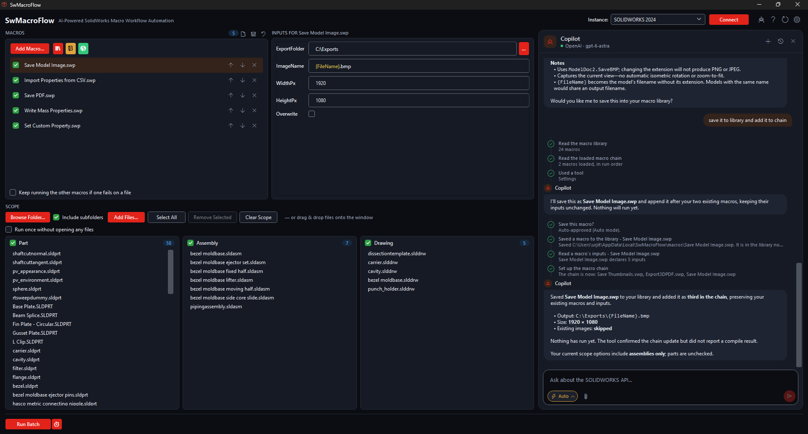

SwMacroFlow — Quick Guide (Step by Step)
1. Add / create
a macro
- Add Macro... browses for a .swp — pick several and they all join the chain.
- The buttons beside it: macros that ship with the app, the library folder, and the online macro library.
- Or drag a .swp onto the window.
- Tick to include, ↑↓ to reorder, ✕ to remove. List order is run order.
New: save & reuse
a workflow
- The disk icon saves the chain and the values typed into it under a name. Not the files in scope.
- The open-file icon applies a saved workflow: the whole chain and every input come back.
- Apply it, then point it at this week's folder.
- Rename or delete under Settings → Workflows.
3. Configure inputs for
the selected macro
- Click a macro to see its inputs. Values never leak between macros.
- The control matches the declared type: text, number, checkbox, dropdown, file or folder.
- {FileName} and other {Property} tokens are filled in per file, as it runs.
- Inputs are checked before the run, so a typo fails now, not on every file.
4. Choose / connect
SOLIDWORKS
- Pick any SOLIDWORKS installed, or one already running.
- No need to connect first — Run Batch connects for you, and starts SOLIDWORKS if it is not up.
- Connect by hand to compile the macros before committing to a run.
Header buttons
- The robot opens the AI Copilot.
- ? opens the documentation.
- The circular arrow is Reset: clears macros, files, inputs and results. It asks first.
- The gear is Settings: theme, restarts, parallel runs, Copilot, schedules and workflows.
6. Run the batch
- Run Batch connects, compiles every ticked macro, then works through the files.
- The clock beside it schedules this batch as a Windows task.
- Cancel stops after the macro in progress — never mid-macro.
2. Select files or
folders to process
- Browse Folder... scans a folder; Include subfolders decides how deep.
- Add Files... picks single files. Or drag files and folders onto the window.
- Only .sldprt, .sldasm and .slddrw. They land in Part / Assembly / Drawing, and each checkbox filters what runs.
- Tick Run once... when the macros act on no document at all.
7. Progress & results
- While it runs, the count and a progress bar appear here.
- Results fill the right-hand column, one row per macro and file: green ran, amber not entirely, red failed, grey skipped.
- Ctrl + Shift + Q cancels too.
- If Run is greyed out, the reason is written next to it.
5. AI Copilot
- Opens in the results column. Needs your own API key, set in Settings.
- Ask about the SOLIDWORKS API, or have it write a macro, save it to the library and add it to the chain.
- Every step it takes is listed. It always asks before running a batch.
💡 Tips
- Test on a few files before you point it at hundreds.
- An output folder that does not exist yet is fine — macros create it.
- A macro that fails skips the rest of the chain for that file, unless you tick the box under the list.